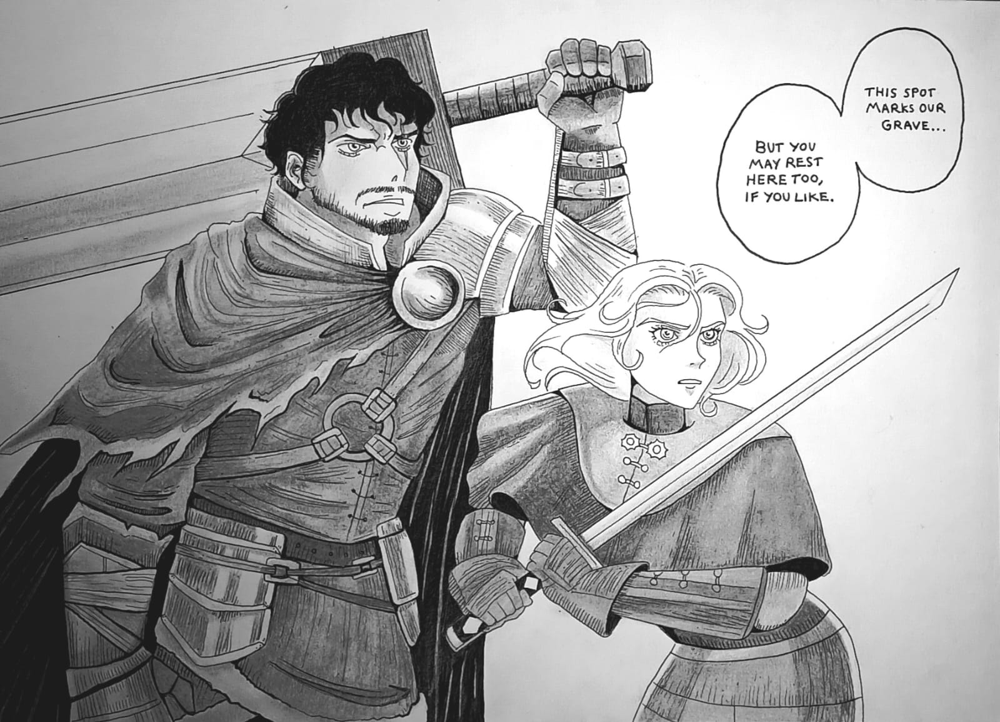

Pen illustration
27 March 2026: A drawing made for fun.
A detailed manga inspired piece, depicting my avatar and my boyfriend's avatars listening to Prince Lothric's speech before the royal brothers' boss battle. I had a lot of fun playing the multiplayer campaign with him and wanted to draw something in tribute to it. Heavy inspiration was taken from characters like Guts the Black Swordsman and Trevor Belmont from the Castlevania series. The art style especially mimicking that of the Castlevania series.
← Back to Gallery